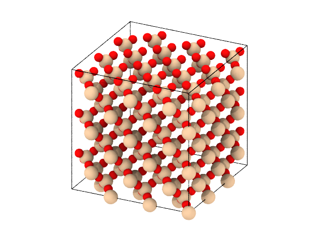
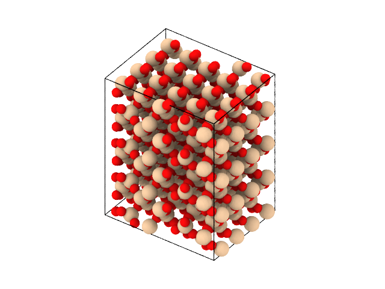

Getting started¶
This section gives a quick introduction to some of the things you can do with molecular-builder.
Creating bulk crystal structures¶
The perhaps simples use case is to create a bulk structure of a given size. In this way, you leverage the database of crystsal structure specifications provided by molecular-builder. Creating a block of \(\beta\)-cristobalite and saving it as a lammps data file may be done as follows:
from molecular_builder import create_bulk_crystal, write
atoms = create_bulk_crystal("beta_cristobalite", size=[20,20,20])
write(atoms, "beta_cristobalite.data")
write(atoms, "beta_cristobalite.png", viewport_type="orthogonal")
The atoms variable now contains an ase.Atoms object, and the writing is the write method of that object.
Similarly, one may create a block of \(\alpha\)-quartz:
from molecular_builder import create_bulk_crystal, write
atoms = create_bulk_crystal("alpha_quartz", size=[20,20,20])
write(atoms, "alpha_quartz.data")
write(atoms, "alpha_quartz.png", viewport_type="orthogonal")
Since the unit cell of \(\alpha\)-quartz is triclinic, the resulting structure may be triclinic, depending on whether the structure can be represented in an orhogonal cell.
The functionality for creating bulk structures uses the ase.spacegroup module, and simplifies the process by providing the parameters for the spacegroup command simply by providing a string with the name of the structure. A complete list of available structures can be found here @TODO.
Loading systems from the prepared systems repository¶
We provide some prepared systems on a zenodo repository. In the example below, we fetch a nanoporous silica sample.
from molecular_builder import fetch_prepared_system, write
atoms = fetch_prepared_system("vashishta_1990_like_amorphous_silica_quench_300K", type_mapping=[[1, 14], [2, 8]])
write(atoms, "amorphous_silica.png")

A slab of amorphous silica¶
You can find the list of available data files on zenodo: https://doi.org/10.5281/zenodo.3769669